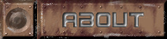

 |
||
Risen 2012: Solstice of War is a total conversion mod for Dawn of War. So sadly it is not a Warhammer race addon. It has the same basic gameplay as Dawn of War, but replaces the factions and setting with those from the Risen story. It will implement more realistic military elements into the the gameplay while still keeping some of the scifi stuff. Risen Story The Risen story is an alternate history that takes place in the future, if there even is such a genre. It basically envisions the world 70 years after an assassination of Hitler (not by a time traveling Einstein). This results ultimately in Russia being preoccupied with Japan, a heavily defended European theater, an uneasy ceasefire, and western nations isolating themselves once again. The persistent old world mentality, warped further with the population and technology of 2012, threatens to bring about the apocalypse many times over. And with the advent of interplanetary travel, the choice presents to the various factions: stay and fight to the end, attempt to escape and start again on fresh new worlds, or destroy a cancerous race before it can spread any further. Gameplay Elements -Upped damage scaling. Those who get the first shot are more likely to get the kill. Thusly more emphasis is put on maneuvering and surprise than simply massing (unless you're the KPC). -Larger maps to give your armies room to maneuver and to make transports actually worth something. -Larger pop caps mean more fun! (sometimes) Though unit detail will have to be lowered to compensate. -Squads that are farther away from friendly buildings will be slower to reinforce or upgrade weapons than those who are nearer. Some transport vehicles will be able to boost reinforcement and upgrade rate though. -Units on higher terrain will have an offensive bonus. -Heavy cover still improves defense but reduces range. -Units won't fire through mountains -The more professional armies will have multiple squad formations to choose from. -Directional armor. Units will be less vulnerable when attacked from the front than from behind. This especially true for a lot of Unigov units when they carry shields. -Introduces and air units (though may be limited to hovering aircraft) and respectively anti-air units. -New gametypes. -Network. Think UT2004's Onslaught or Planetside. Each team starts with an impenetrable shield around their base. To bring down the opposite team's shield, you must establish a chain of captured strategic points from your base to his. -Skirmish. Games start with a DMZ dividing the bases. Each team has a preset req. and pow. amount and a minute or so to field their armies, which will be easy because all build and research times are lowered then. After that the buildings are destroyed and the DMZ lifted. The armies will then fight to the last man! -Space Race. Collect enough Fuel resources and spacecraft parts scattered around the map. The first to launch off the planet wins!  |